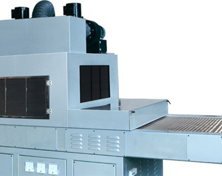
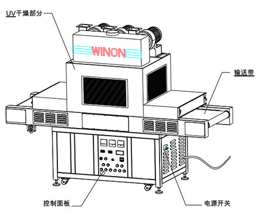

UV CURING MACHINE
WUV-800
Conveyor UV Curing Machine
Winon Industrial Co., Ltd. — Dongguan, China
The Winon WUV-800 conveyor dryer is carefully designed using selected, high-quality components for stable product performance. It consists of UV tubes, a lamp shade and transformer (ballast) and capacitor, and is designed for curing UV inks. Precise processing and easy operation make it a reliable addition to any UV printing line.
Technical Parameters
| Machine Type | WUV-800 |
|---|---|
| Maximum Workpiece Height | 100 mm |
| Power Specifications | 380V/AC 50/60 Hz |
| Power | 15 kW |
| Dimensions | 3100 x 1060 x 1730 mm |
| Net Weight | 610 kg |
Application Areas
Widely used in printing, electronics, building materials and machinery industries for UV curing in screen, offset and letterpress printing; self-adhesive labels, metal plate, glass, ceramics, KT board, electronic components and PCB substrates; gloss, matt, crystal and relief UV coating drying and curing.
KEY FEATURES
Technical Features
Instant UV Curing
Designed for curing UV inks using UV tubes with lampshade, transformer (ballast) and capacitor.
Stable Performance
Carefully selected quality components deliver consistent, dependable curing results.
Easy Operation
Precise processing and simple, convenient operation in daily production.
Wide Applications
Cures UV inks and coatings across printing, electronics, building materials and machinery industries.
Product Gallery
Additional views of the WUV-800 showing product details and finish.


Interested in the WUV-800?
Contact Printway Marketing & Services for pricing, product demonstrations, spare parts, consumables, and technical support.
Request a Quote